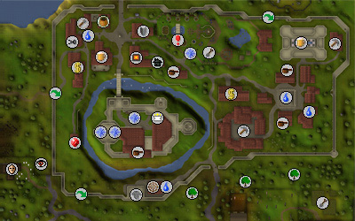

")
Falador
Introduction | Location | Points of Interest | Personalities
Quests | Defenders of the City | Miscellaneous
Quests | Defenders of the City | Miscellaneous
Introduction

Falador is officially ruled by King Vallance, though he has not been seen for many years and the practical day-to-day running of the city has fallen to Sir Amik Varze, leader of the White Knights.
Location

To the north of Falador lies the Dwarven Mine, which can be reached both above and under the ground, by virtue of the lattice of tunnels that extends between the Mine and the Miners' Guild in Falador. Travelling north-west from Falador, via Taverley, will bring you to Burthorpe, seat of the Crown Prince of Asgarnia and home of the Imperial Guard.
There is little directly west of Falador except the Makeover Mage, Photo Booth and Dark Wizards' Tower.
To the south lies Port Sarim and the village of Rimmington.
Though there are only two gates in Falador's walls, there is also a broken section of wall to the west, and a tunnel beneath the walls in the south-west.
Points of Interest

The Castle itself is an impressive example of the work of the master engineers of Asgarnia. It rises high above the city to provide an unrivalled view of the White Knights' domain, and it is surely this imposing sight that has held off invasions in times past. Should you be a member of the White Knights (by completing the Wanted! quest), you can purchase armour from Sir Vyvin. You can check what level of White Knight you are by either checking your Quest Journal under Wanted!, or by talking to Sir Vyvin. Wandering about north of the castle is a Town Crier, who is more than happy to explain the Rules of Conduct and the role of Player Moderators.
Many travelling adventurers and merchants gather in the grounds of the park, and around the city's centre to sell their wares to other traders. If you find yourself in possession of some goods, or you need something specific, it is probable that another adventurer is there willing to buy your goods or to sell goods to you.
If you own a house, the Herald, who lives in the castle, can track down your family tree and give you a coat of arms that you can decorate your house with. He will also paint pictures to hang upon the walls of your home.
The city boasts two banks, allowing adventurers to make the most of the city's other amenities. In the north of the city is a park, where more peaceful wanderers may like to grow a tree or spend some time looking around at the flowers, trees, ponds or the statue of Saradomin.
In the north-east of the city is the Party Room, which is for partying. Obviously.
Personalities
![[image: king vallance with question mark on his chest]](../../img/main/kbase/npc/area_guides/chathead/mystery_king_vallance.gif "king vallance with question mark on his chest")
King Vallance is the ruler of Falador and of Asgarnia. He has spent a good deal of his life on the throne, but in recent years seems to have retired from public life. No one has seen him quite a long time, and now Sir Amik Varze rules Falador in his place. |
Sir Amik Varze is the leader of the White Knights of Falador, who are a shining light of nobility and chivalry in a dangerous world. He is remarkably approachable despite the strains of ruling in King Vallance's stead, and is more than willing to find some sort of work for eager adventurers.
|
|
| Sir Amik Varze can be found in the second floor of the west tower of Falador Castle. |

As well as being a fearsome warrior, Sir Vyvin is also the White Knights' one-eyed armourer. He is a veteran of many battles, and it is his unflinching dedication to the order of the White Knights that has earned him such a high and respected position.
|

The Squire is a well-meaning, if forgetful, young man, hoping to one day become a fully-fledged White Knight of Falador. Like all squires, he must spend a few years yet as little more than a dogsbody, cleaning and maintaining Sir Vyvin's armour and weapons, preparing his meals, and generally working as cook and cleaner.
|
|
| Sir Vyvin can be found on the second floor of the castle, in the east wing. | Sir Vyvin's Squire can be found in the courtyard of the White Knights' Castle. |

This old warrior is a member of the secretive group that calls itself the Temple Knights. He speaks in a strange manner, but it is perfectly in keeping with his monocle and the ways of the Temple Knights (who, to those familiar with them, are a particularly quirky bunch).
|

Wyson is a dedicated gardener, and always looking to improve the trees in his care. Sadly, one of his experiments involved using 'Malignus-Mortifer's-Super-Ultra -Flora-Growth-Potion', which, though his trees certainly grew to enormous size, also affected the local mole population. He's now looking for bold adventurers to keep the population of giant moles to a minimum.
|
|
| Members can find Sir Tiffy Cashien sitting on a bench just inside the south entrance to the Falador Gardens. | Wyson can be found in or around the pavilion in the east of the Falador Park. |

Party Pete runs the Party Room, so you need to talk to him to arrange anything truly exciting, like a balloon drop. He is very enthusiastic, which could easily get on your nerves if you had to spend any real length of time with him... then again, he does have one of the most amazing hairstyles in all of Asgarnia.
|

Megan works at the Party Room, and her specialty is working up a sweat dancing. She's actually quite good at it, so it's a pity there isn't a dedicated dance school for her to teach at.
|
|
| Party Pete can be found keeping the party alive in the Party Room. | Megan can be found in the bar upstairs at the Party Room. |
Quests
The following quests can be started in Falador:
- The Knight's Sword
- Black Knights' Fortress
- Recruitment Drive (Members)
- Wanted! (Members)
- Quiet Before the Swarm (Members)
Defenders of the City

Dwarves are not often found within the boundaries of human settlements, but the Mining Guild in Falador provides an excellent reason for their presence. Dwarves are stout fighters, and their mistrust of Magic gives them some Defence against it. If you're new to killing dwarves, melee or Ranged are preferable to Magic.
|

The town guards of Falador may be numerous, and they aren't as dangerous as the White Knights, but they can still present a challenge to unwary adventurers. They are skilled with a variety of weapons, including bows, axes, swords and crossbows. Their armour varies, but most are quite resilient to slashing attacks, and vulnerable to stabbing or Magic.
|
|
| Dwarves can be found in the Mining Guild in the eastern half of Falador. | The Town Guards of Falador can be found wandering the city in a number of places, but there are usually clusters of them at the city's north and south gates. |

The White Knights are possibly the most famous knightly order in the whole of RuneScape, and that reputation is well deserved. The Knights are formidable opponents and their armour and weapons are of the highest quality. Their ranks are denoted by the plumes on their helmet: a basic knight wears a red plume, a Proselyte wears yellow, an Acolyte wears Green, and a Partisan wears blue.
|
| The White Knights can be found, quite obviously, in the Castle of the White Knights. |
Miscellaneous
- There is a bronze pickaxe spawn point in the Mining Guild.
- There is a hammer spawn point upstairs in the forge just north of the castle.
- Cooked chicken mysteriously spawns in the top floor of Cassie's Shield Shop.
- If you prefer your chicken raw, or are a keen fletcher, there is a chicken in the courtyard of the White Knights' Castle.
- Members can go hunt moles for Wyson; if you give him the moles' claws or hides as proof of slaying the giant moles he will reward you with birds' nests. Some of these nests may contain seeds, useful for advancing your Farming skill.
- If you have completed Recruitment Drive, you can have your respawn point moved to Falador. Talk to Sir Tiffy Cashien about 'the Gaze of Saradomin'.

More articles in
Cities and Towns
|
|